Los Angeles Travel Guide
Largest city in California and the second most populous city in the United States is known for its Mediterranean climate, ethnic diversity, Hollywood entertainment industry, and its sprawling metropolis.
Top Locations


Places to See in Los Angeles
Downtown Los Angeles
Central business district of Los Angeles covering 5.84 sq mi. divided into districts named for the activities concentrated there now or historically, including the Arts, Civic Center, Fashion, Banking, Theater, Toy, and Jewelry districts
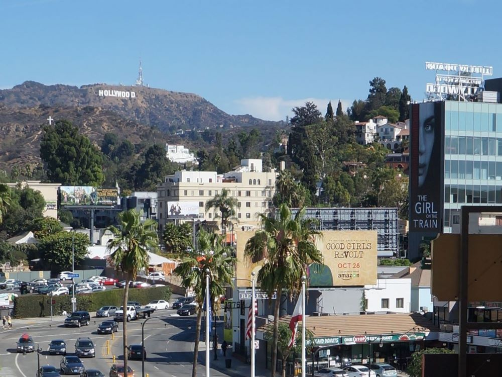
© Pierre André, CC BY-SA 4.0, via Wikimedia Commons; Image Size Adjusted
.JPG){kind=link}
Hollywood
Neighborhood in the central region of Los Angeles. Its name has come to be a shorthand reference for the U.S. film industry and the people associated with it
Abbot Kinney Blvd
Vibrant commercial street lined with boutique shops, art galleries, restaurants, and cafés known for its creative atmosphere and pedestrian-friendly design.
Aquarium of the Pacific
Public aquarium featuring a collection of over 11,000 animals representing over 500 different species sees 1.5 million visitors a year
Baldwin Hills Scenic Overlook
A steep hillside park featuring a dramatic staircase and winding trail leading to panoramic views of the surrounding basin, coastline, and mountains.
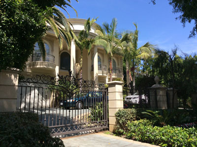
HanSangYoon, CC BY-SA 4.0, via Wikimedia Commons; Image Size Adjusted

Beverly Hills
City surrounded by the cities of Los Angeles and West Hollywood is home to many celebrities, luxury hotels, and the Rodeo Drive shopping district
California African American Museum
Museum dedicated to African American history, art, and culture, featuring exhibitions that explore the achievements, experiences, and contributions of African Americans in California and beyond.
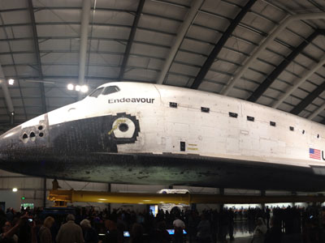
Adoramassey, CC BY-SA 4.0, via Wikimedia Commons; Image Size Adjusted

California Science Center
Interactive science museum featuring hands-on exhibits, space artifacts, ecosystems displays, and immersive IMAX films designed to inspire learning and exploration.

Elliottwolf, CC BY-SA 3.0, via Wikimedia Commons; Image Size Adjusted

Columbia Memorial Space Center
Interactive science and space museum celebrating innovation, exploration, and the legacy of the Space Shuttle Columbia through hands-on exhibits and educational experiences.
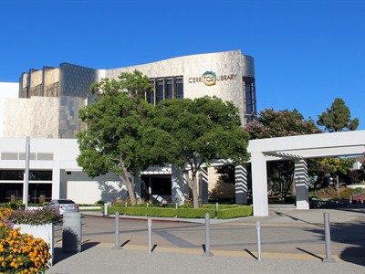
Elliottwolf, CC BY-SA 3.0, via Wikimedia Commons; Image Size Adjusted
Cerritos Library
Award-winning public library featuring innovative architecture, extensive collections, interactive technology, study spaces, and educational resources for visitors of all ages.
Adoramassey, CC BY-SA 4.0, via Wikimedia Commons; Image Size Adjusted
Echo Park
Urban park centered around a scenic lake with walking paths, paddle boat rentals, lotus beds, and open green spaces for recreation and relaxation.
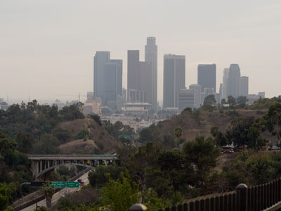
Eric Richardson from Los Angeles, CC BY 2.0, via Wikimedia Commons; Image Size Adjusted

Elysian Park
Expansive urban park featuring rugged hills, scenic viewpoints, picnic areas, and a network of trails that wind through natural landscapes and historic landscaped sections.
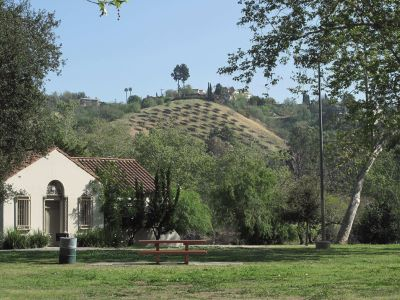
Eric Richardson from Los Angeles, CC BY 2.0, via Wikimedia Commons; Image Size Adjusted
Ernest E. Debs Regional Park
Expansive hillside preserve offering scenic trails, native woodlands, and a tranquil pond surrounded by wildlife and educational facilities.
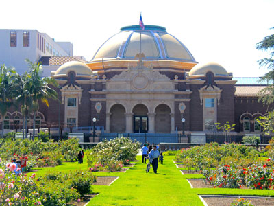
MikeJiroch, CC BY-SA 3.0, via Wikimedia Commons; Image Size Adjusted

Exposition Park
Large urban cultural park featuring museums, sports venues, landscaped gardens, and open recreational spaces designed for education, events, and outdoor activities.
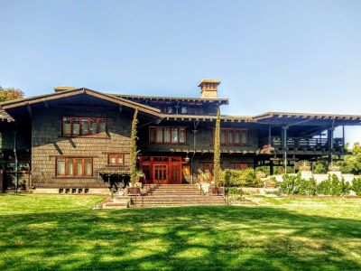
Codera23, CC BY-SA 4.0, via Wikimedia Commons; Image Size Adjusted

Gamble House
Historic Craftsman-style residence showcasing detailed woodwork, handcrafted furnishings, and architectural design elements that exemplify early 20th-century American residential craftsmanship.
Getty Museum
Museum well known for its architecture, gardens, and views overlooking Los Angeles, featuring pre-20th-century European paintings, drawings, sculpture, and decorative arts; and photographs from the 1830s through present day from all over the world
Getty Villa
Recreated ancient Roman-style seaside estate featuring classical architecture, antiquities collections, gardens, and coastal views inspired by historic Mediterranean villas.
Hammer Museum
Contemporary art museum featuring rotating exhibitions, collections of modern works, film screenings, and public programs in a minimalist architectural setting.
In-N-Out Burger LAX
Popular fast-food restaurant known for freshly prepared burgers and fries, located near an airport runway with clear views of arriving and departing aircraft.
Museum of Latin American Art
Contemporary art museum dedicated to Latin American and Latino art, featuring diverse exhibitions that explore culture, identity, history, and creative expression from across the Americas.
San Vicente Mountain Park
Mountain overlook park featuring a historic former missile and radar site with sweeping panoramic views of the coastline, valleys, and surrounding peaks.
The Grove LA
Open-air shopping and entertainment complex featuring retail stores, restaurants, a movie theater, and landscaped plazas designed for leisure and social gatherings.
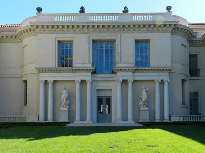
Guerinf, CC BY-SA 4.0, via Wikimedia Commons; Image Size Adjusted
.JPG){kind=link}
Huntington Library
Collections-based educational and research institution houses an extensive art collection with a focus on 18th- and 19th-century European art and 17th- to mid-20th-century American art.
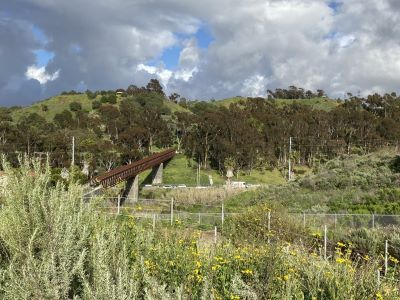
Jengod, CC BY-SA 4.0, via Wikimedia Commons; Image Size Adjusted

Kenneth Hahn State Recreation Area
Expansive urban park offering scenic trails, picnic areas, sports facilities, and panoramic views of Los Angeles.
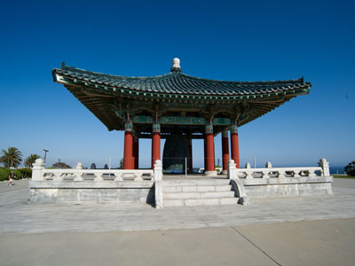
Bill Ebbesen, CC BY 2.5, via Wikimedia Commons; Image Size Adjusted

Korean Bell of Friendship
Large ornate bronze bell housed in a traditional pavilion overlooking coastal cliffs, symbolizing international friendship and cultural exchange through historic craftsmanship.
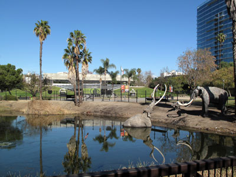
Downtowngal, CC BY-SA 4.0, via Wikimedia Commons; Image Size Adjusted

La Brea Tar Pits
Group of tar pits formed in urban Los Angeles where tar has preserved the bones of trapped animals. The George C. Page Museum is dedicated to researching the tar pits and displaying specimens from the animals that died there
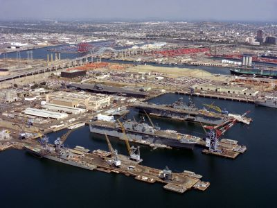
U.S. Navy, Public domain, via Wikimedia Commons; Image Size Adjusted
Long Beach
Coastal city offering a blend of urban attractions, waterfront recreation, and cultural landmarks centered around a vibrant harbor.
Los Angeles County Museum of Art / LACMA
Largest art museum in the western United States attracts nearly a million visitors annually and holds more than 150,000 works spanning the history of art from ancient times to the present
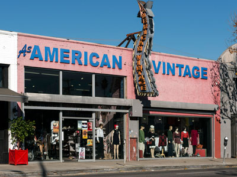
Carol M. Highsmith, Public domain, via Wikimedia Commons; Image Size Adjusted
Melrose Avenue
Shopping, dining and entertainment destination that starts at Santa Monica Boulevard with its most famous section, known as the Melrose District, at the West End through West Hollywood and Hollywood
Norton Simon Museum
Art museum located in Pasadena, California includes European paintings, sculptures, and tapestries; Asian sculptures, paintings, and woodblock prints. Outside sculptures surround the museum, with notable Rodin sculptures near its entrance and other sculptures
The Original Farmers Market
Area of food stalls, sit-down eateries, prepared food vendors, and produce markets is a historic Los Angeles landmark and tourist attraction
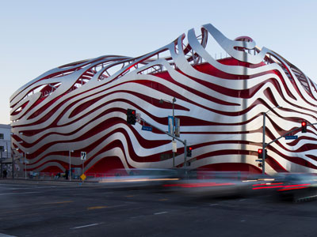
David Zaitz, CC BY-SA 4.0, via Wikimedia Commons; Image Size Adjusted

Petersen Automotive Museum
One of the world's largest automotive museums, the Petersen Automotive Museum is a nonprofit organization specializing in automobile history and related educational programs
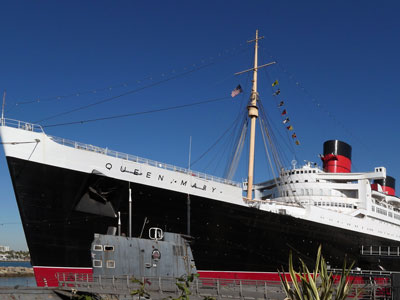
Bernard Spragg. NZ, CC0, via Wikimedia Commons; Image Size Adjusted

Queen Mary
Retired British ocean liner that now serves as hotel and museum frequented by travelers looking to learn about its history and get a glimpse into the luxury of the past
-400.jpg "Randy's Donuts")
Thomas Hawk, CC BY-NC 2.0, via Wikimedia Commons; Image Size Adjusted
.jpg){kind=link}
Randy's Donuts
Famous bakery known for its giant rooftop donut and wide variety of handmade donuts served 24/7 through walk-up and drive-thru windows.
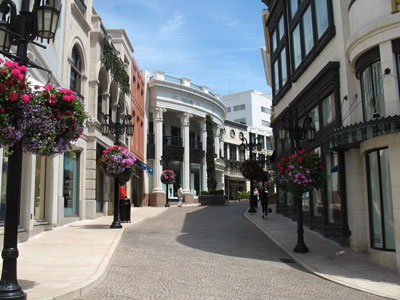
Kjetil Ree, CC BY-SA 2.5, via Wikimedia Commons; Image Size Adjusted

Rodeo Drive
Renown two-mile-long street in Beverly Hills known for celebrity and premiere luxury shopping destination
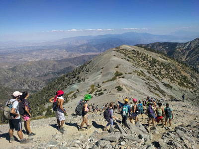
Testuser47, CC BY-SA 4.0, via Wikimedia Commons; Image Size Adjusted

San Gabriel Mountains
Mountain range located between the Los Angeles Basin and the Mojave Desert, and lies in, and is surrounded by, the Angeles and San Bernardino National Forests
Santa Monica Beach and Pier
Pier at the foot of Colorado Avenue in Santa Monica, California, containing a small amusement park, concession stands, and areas for views and fishing. The pier contains Pacific Park, a family amusement park with its solar panelled Ferris wheel
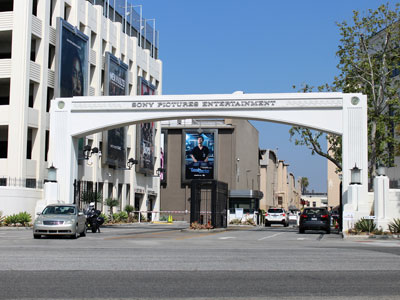
Coolcaesar, CC BY-SA 4.0, via Wikimedia Commons; Image Size Adjusted

Sony Pictures Studios
Television and film studio complex houses the division's film studios with lot open to the public for daily studio tours
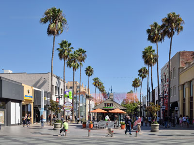
Cayambe, CC BY-SA 4.0, via Wikimedia Commons; Image Size Adjusted
_06_Sept_2017.jpg){kind=link}
Third Street Promenade
Pedestrian mall esplanade, shopping, dining and entertainment complex in the downtown area of Santa Monica considered a premier shopping and dining district
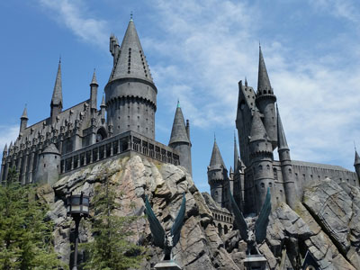
Breakfast221, CC BY-SA 4.0, via Wikimedia Commons; Image Size Adjusted

Universal Studios Hollywood
Film studio and theme park initially created to offer tours of the real Universal Studios sets and is the first of many full-fledged Universal Studios Theme Parks located across the world
Jonathan Williams, CC BY-SA 3.0, via Wikimedia Commons; Image Size Adjusted

USS Iowa Museum
Maritime museum located at the Port of Los Angeles in San Pedro. The museum's main artifact is the USS Iowa (BB-61), lead ship of the Iowa class of battleships
Venice Beach and Boardwalk
Labeled as "a cultural hub known for its eccentricities" as well as a "global tourist destination" includes promenade that runs parallel to the beach, Muscle Beach, and the Venice Beach Recreation Center
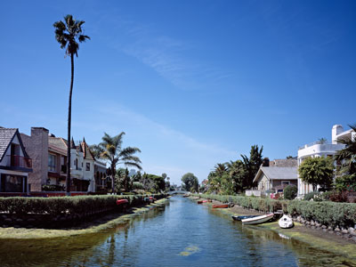
Carol M. Highsmith, Public domain, via Wikimedia Commons; Image Size Adjusted

Venice Canal Historic District
Historic district noteworthy for possessing man-made wetland canals, built in 1905 by developer Abbot Kinney as part of his Venice of America
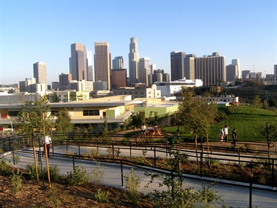
Carol M. Highsmith, Public domain, via Wikimedia Commons; Image Size Adjusted
Vista Hermosa Natural Park
Urban natural park featuring walking trails, grassy meadows, picnic areas, and scenic skyline views within a thoughtfully designed native landscape.
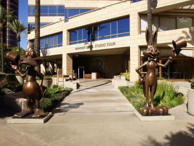
Rebell18190, Copyrighted free use, via Wikimedia Commons; Image Size Adjusted

Warner Bros. Studio Tour Hollywood
Guided and walkthrough studio tour of Warner Bros. Studios, Burbank in Los Angeles offers visitors the chance to glimpse behind the scenes of one of the oldest film studios in the world
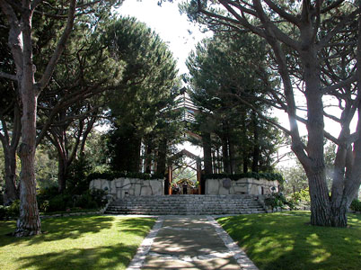
Bruceb Boehner, CC BY-SA 3.0, via Wikimedia Commons; Image Size Adjusted

Wayfarers Chapel
Chapel, also known as "The Glass Church", noted for its unique organic architecture and location on cliffs above the Pacific Ocean
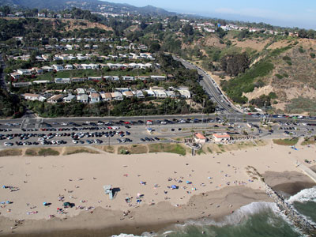
Foto: © JCS / Wikimedia Commons
Will Rogers State Beach
Beach park located in the Pacific Palisades neighborhood of Los Angeles extending one and three quarters miles along the coast
Overview
Los Angeles is the largest city in California and the second most populous city in the United States, with nearly four million residents in the city proper and more than 18 million across the greater metropolitan area. It is best known as the global capital of the entertainment industry, the home of Hollywood, the major film and television studios, and the Academy, Emmy and Grammy Awards. Los Angeles is also one of the world’s great centers of art, music, technology, aerospace, fashion and international trade, and it is home to the busiest container port complex in the Western Hemisphere. Often billed as the “Creative Capital of the World,” it has shaped how much of the planet sees itself through movies, television, pop music and car-and-beach culture.
Visitors come for the sunshine, the Pacific coastline and the chance to see the places they know from the screen. Popular draws include the Hollywood Sign, the Hollywood Walk of Fame, studio tours, the beaches of Santa Monica, Venice and Malibu, world-class museums, celebrity-filled neighborhoods, nearby theme parks, and one of the most diverse food scenes in the country. Few cities offer so much variety in one place: you can surf in the morning, hike to a mountaintop observatory in the afternoon and eat tacos, Korean barbecue or sushi at night, with snow-capped peaks in the San Gabriel Mountains visible on a clear winter day. The city will also host the 2028 Summer Olympic Games, its third Olympics after 1932 and 1984.
History. The area was long home to the Tongva (Gabrielino) people before Spanish settlers founded El Pueblo de Nuestra Señora la Reina de los Ángeles on September 4, 1781. Los Angeles passed to Mexico in 1821 and to the United States in 1847 at the end of the Mexican–American War, and it was incorporated as a city in 1850, the year California became a state. The arrival of the railroads in the 1870s and 1880s, the discovery of oil, citrus ranching and the completion of the Los Angeles Aqueduct in 1913 fueled enormous growth. Filmmakers began arriving in the 1900s for the reliable sunshine and varied scenery, Hollywood merged with the city in 1910, and by the 1920s the region dominated world film production. Aerospace and defense industries boomed during World War II, and postwar freeways and suburbs created the sprawling, car-oriented metropolis of today. Today’s Los Angeles is one of the most ethnically diverse cities in the world.
Hollywood. Hollywood, a neighborhood about seven miles northwest of downtown, is the symbolic heart of the film industry. The Hollywood Walk of Fame runs along Hollywood Boulevard and holds more than 2,700 stars set in the sidewalk, a short stroll from the TCL Chinese Theatre with its famous forecourt of celebrity handprints and footprints, and the Dolby Theatre, home of the Academy Awards. Nearby are the Hollywood Museum, the Hollywood Bowl amphitheater, the star-studded Hollywood Forever Cemetery, Paramount Pictures and the landmark Hollywood Sign on Mount Lee. Hollywood Boulevard can be crowded and touristy, but it remains a must-see for first-time visitors.
Sunset Boulevard and the Sunset Strip. Sunset Boulevard stretches roughly 22 miles from downtown Los Angeles to the Pacific Coast Highway, passing through Echo Park, Silver Lake, Hollywood, Beverly Hills, Bel Air and Pacific Palisades. Its most famous stretch is the 1.5-mile Sunset Strip in West Hollywood, the center of the city’s nightlife since the 1920s and a birthplace of rock and roll history. Legendary venues include the Whisky a Go Go, the Roxy, the Rainbow Bar and Grill, the Viper Room and the Comedy Store, alongside classic hotels such as the Chateau Marmont and Sunset Tower, giant billboards and glittering rooftop lounges.
Downtown Los Angeles. Downtown Los Angeles has been transformed over the past two decades from a business district that emptied out at night into a vibrant center for culture, dining and nightlife. Highlights include Frank Gehry’s Walt Disney Concert Hall, The Broad contemporary art museum, the Museum of Contemporary Art, the Art Deco Los Angeles City Hall, the Central Library, the historic Bradbury Building, Angels Flight, Grand Central Market, Olvera Street, Chinatown, Little Tokyo, the Arts District and the Mission Revival and Art Deco Union Station. It is also the hub of the Metro rail system and the home of Crypto.com Arena and L.A. Live.
Beverly Hills. Beverly Hills is an independent city surrounded by Los Angeles and one of the most famous addresses in the world, synonymous with wealth, glamour and luxury. Its centerpiece is Rodeo Drive, lined with high-end boutiques, along with the palm-lined streets of the “flats,” the pink-hued Beverly Hills Hotel, the Beverly Wilshire, Beverly Gardens Park, the Electric Fountain and City Hall. Many visitors take a guided tour of celebrity homes in the hills above the city, and the shopping and dining districts around Beverly Drive and Canon Drive make for easy walking.
Long Beach. About 20 miles south of downtown, Long Beach is the largest city in Los Angeles County after Los Angeles itself and home to one of the busiest seaports in the world. The waterfront draws visitors to the retired Cunard liner Queen Mary, the Aquarium of the Pacific, Shoreline Village, harbor cruises and the Pacific Ocean beaches. Neighborhoods such as Belmont Shore, Naples Island and the East Village Arts District add canals, gondola rides, dining and shopping, and the city hosts the Acura Grand Prix of Long Beach each spring. The Metro A Line connects Long Beach to downtown Los Angeles.
Los Angeles Metro Rail. Despite the city’s reputation for driving, Metro Rail has grown into a useful way to reach many major sights. The system includes the A, B, C, D, E and K lines, anchored at Union Station. The B Line subway runs from Union Station to Hollywood/Highland, steps from the Walk of Fame, and on to Universal City and North Hollywood. The E Line connects downtown to Culver City and the Santa Monica Pier, the A Line reaches Long Beach and Pasadena, and the K Line serves the Crenshaw corridor and connects toward LAX. Fares are paid with a reloadable TAP card or the TAP app, and Metro buses fill many of the gaps. Rail service is a good way to avoid traffic and the high cost of parking.
Sightseeing and Popular Landmarks. Must-see landmarks include the Hollywood Sign, Griffith Observatory with its views of the skyline and the sign, the Santa Monica Pier, the Venice Beach boardwalk and Venice Canals, Rodeo Drive, Walt Disney Concert Hall, the Battleship USS Iowa, the Grove and Original Farmers Market, Melrose Avenue, Abbot Kinney Boulevard and the Watts Towers, a folk-art masterpiece. Movie fans can tour the lots at Universal Studios Hollywood, Warner Bros., Paramount Pictures and Sony Pictures. Disneyland Resort and Knott’s Berry Farm are about an hour away in Orange County.
Culture and Museums. Los Angeles has one of the richest museum scenes in the country. The Los Angeles County Museum of Art (LACMA) is the largest art museum in the western United States, and the Getty Center and Getty Villa offer art, architecture, gardens and sweeping views, both with free admission. Other highlights include The Broad, the Hammer Museum, the Norton Simon Museum and the Huntington Library in nearby San Marino, the Petersen Automotive Museum, the La Brea Tar Pits, the Natural History Museum and the California Science Center, which is home to the Space Shuttle Endeavour. The California African American Museum, the Museum of Latin American Art and the Japanese American National Museum reflect the city’s diverse communities, while the Academy Museum of Motion Pictures celebrates film. Performing arts venues include the Hollywood Bowl, the Music Center and Walt Disney Concert Hall, home of the Los Angeles Philharmonic.
Parks. For a city of its size, Los Angeles has outstanding open space. Griffith Park, at more than 4,000 acres one of the largest urban parks in the country, holds Griffith Observatory, the Greek Theatre, the Los Angeles Zoo, miles of hiking trails and the Hollywood Sign backdrop. Other favorites include Runyon Canyon Park, Elysian Park, Echo Park, Exposition Park, Grand Park, Kenneth Hahn State Recreation Area, Baldwin Hills Scenic Overlook and Vista Hermosa Natural Park. The Santa Monica Mountains National Recreation Area, just west of the city, protects canyons, waterfalls and coastal trails.
Beaches. Los Angeles County has about 75 miles of coastline, and beach culture is central to the city’s identity. The Santa Monica Beach and Pier, with its Ferris wheel and amusement rides, and the freewheeling Venice Beach boardwalk are the best known. To the north, Malibu offers surf spots, rugged coves and quieter sands such as Zuma Beach, El Matador State Beach and Leo Carrillo State Park, while Will Rogers State Beach lies along the Pacific Palisades. The South Bay beaches of Manhattan Beach, Hermosa Beach and Redondo Beach bring volleyball, surfing and bike paths, and Long Beach has family-friendly sand and calm water. The Pacific is cool year-round, so most swimmers prefer late summer and early fall.
Cuisine. Los Angeles is among the best food cities in America, with nationally acclaimed restaurants ranging from taco trucks and hot dog stands to tasting-menu temples. The Michelin Guide returned to California in 2019 and awards stars and recommendations across Los Angeles, with a mix of fine-dining establishments such as Providence and n/naka, outstanding sushi counters and neighborhood favorites. International options are exceptional: authentic Mexican food, including some of the best tacos and birria in the country; Korean barbecue in Koreatown; Japanese ramen and sushi in Little Tokyo and Sawtelle; Thai food in Thai Town; Chinese dim sum in the San Gabriel Valley; Armenian, Persian, Ethiopian, Salvadoran and Filipino cuisine, and much more. Several foods were created or popularized here, including the French dip sandwich (claimed by Philippe the Original and Cole’s), the Cobb salad (from the Hollywood Brown Derby), the California roll, Korean tacos, the Chinese chicken salad and the fast-food drive-through model of In-N-Out Burger. Local institutions include Pink’s Hot Dogs, Randy’s Donuts, Grand Central Market and the Original Farmers Market. Farm-to-table dining thrives thanks to year-round produce from California farms.
Sports. Los Angeles is one of the country’s great sports cities, with teams in every major league. The Dodgers (MLB) play at Dodger Stadium, the Lakers (NBA) and Kings (NHL) at Crypto.com Arena, the Clippers (NBA) at Intuit Dome in Inglewood, and the Rams and Chargers (NFL) at SoFi Stadium in Inglewood. Nearby Anaheim hosts the Angels (MLB) and the Ducks (NHL). Soccer fans follow LA Galaxy and LAFC (MLS) and Angel City FC (NWSL), and the Sparks represent the WNBA. College football fans follow the UCLA Bruins and the USC Trojans, a historic crosstown rivalry, with home games at the Rose Bowl and the Los Angeles Memorial Coliseum respectively, and the Coliseum will again host the Olympic ceremonies in 2028.
Seasons and Weather. Los Angeles has a Mediterranean climate with more than 280 sunny days a year, mild, wetter winters and warm, dry summers. Daytime highs average in the upper 60s to low 70s °F in winter and the mid-70s to low 80s °F near the coast in summer, with much hotter temperatures in the San Fernando Valley and inland areas that often reach the 90s and above. Most of the roughly 15 inches of annual rain falls between November and March, and the mountains may see snow. Coastal areas often have a marine layer of morning clouds known as “May Gray” and “June Gloom,” while September and October are frequently the warmest months. Dry Santa Ana winds in fall and winter can raise wildfire danger, as the devastating January 2025 Palisades and Eaton fires showed, so check conditions before visiting hillside areas. Spring and fall are generally the most comfortable times to visit, while summer is best for the beach.
Traffic. Los Angeles is notorious for traffic, and congestion rankings routinely place it among the most congested cities in the United States. The freeway network, including the I-405, I-10, I-5, US-101 and SR-110, can slow to a crawl during weekday rush hours, roughly 6:30–10 a.m. and 3–7 p.m., and also on busy weekends, around events and on the way to the beach. Even short trips can take an hour or more, so plan major sightseeing by neighborhood, travel off-peak when you can and use navigation apps for real-time conditions. Metro Rail, rideshare and walking in compact areas like downtown, Hollywood and Santa Monica can save time and the cost of parking, which is often expensive.
Celebrity Culture. Los Angeles is home to more actors, musicians, directors and athletes than any other city, and celebrity culture is a part of daily life. Spotting a star is possible, but it is never guaranteed: most visitors will not see one by chance, though a determined visitor who spends a few days in the right places has a fair chance of a sighting, and many locals report occasional run-ins at grocery stores, restaurants and coffee shops. Stars are most often seen at upscale and trendy spots such as Rodeo Drive, the Polo Lounge at the Beverly Hills Hotel, the Grove, Erewhon markets, Melrose Place, Malibu Country Mart and Nobu Malibu, the Chateau Marmont and Sunset Tower, as well as private clubs such as Soho House, which are not open to the public. Hiking at Runyon Canyon and Griffith Park, red-carpet premieres at the TCL Chinese Theatre and Dolby Theatre, studio tapings of talk shows and sitcoms, and Lakers and Clippers games with courtside seats also offer chances for a sighting. Please respect privacy: do not follow celebrities to their homes or interrupt their meals.
Sources: This article uses material from the Wikipedia articles "Los Angeles", "History of Los Angeles" and "Climate of Los Angeles", which are released under the Creative Commons Attribution-Share-Alike License 3.0. Additional information from Discover Los Angeles, the Los Angeles County Metropolitan Transportation Authority (Metro), the Michelin Guide California, the National Weather Service Los Angeles/Oxnard, the City of Los Angeles, the INRIX Global Traffic Scorecard, the LA28 Olympic and Paralympic Games and the official websites of the attractions, museums and teams mentioned.
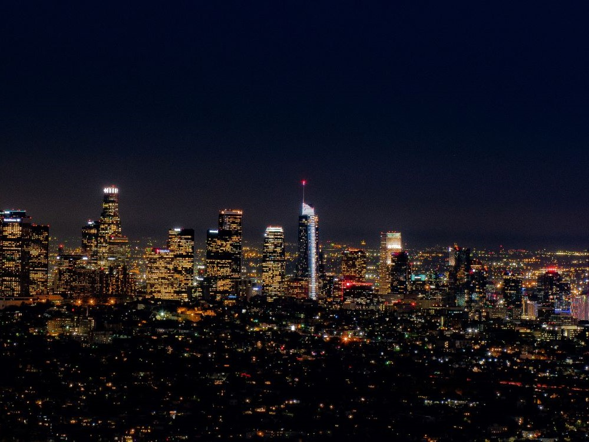
J.smith, CC BY-SA 3.0, via Wikimedia Commons ; Image Size Adjusted
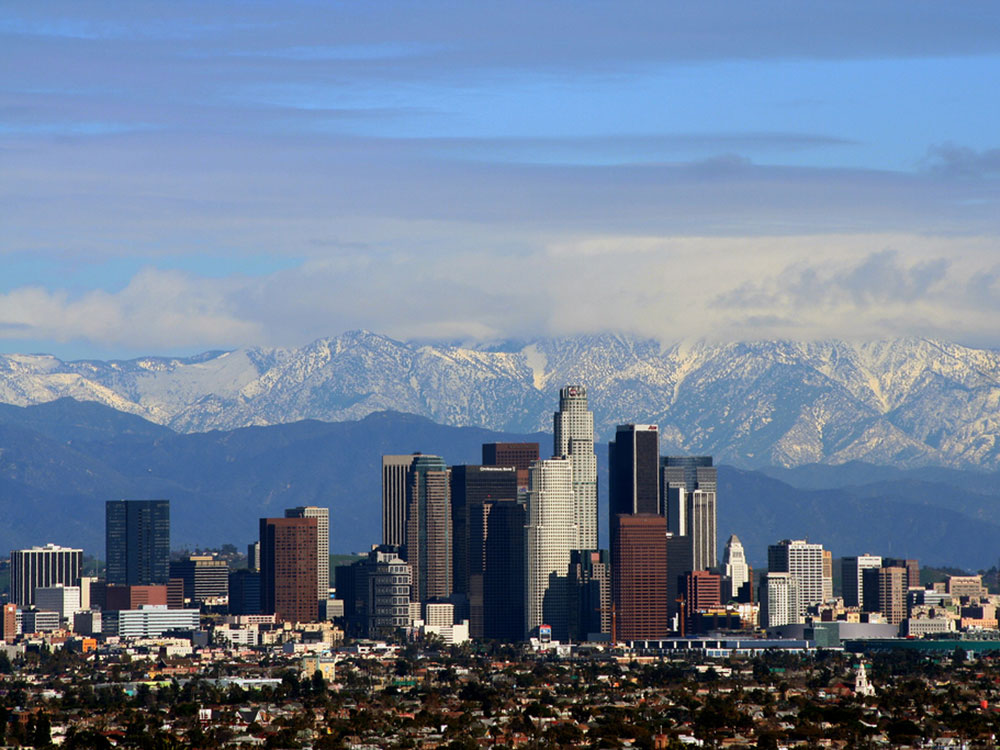
J.smith, CC BY-SA 3.0, via Wikimedia Commons ; Image Size Adjusted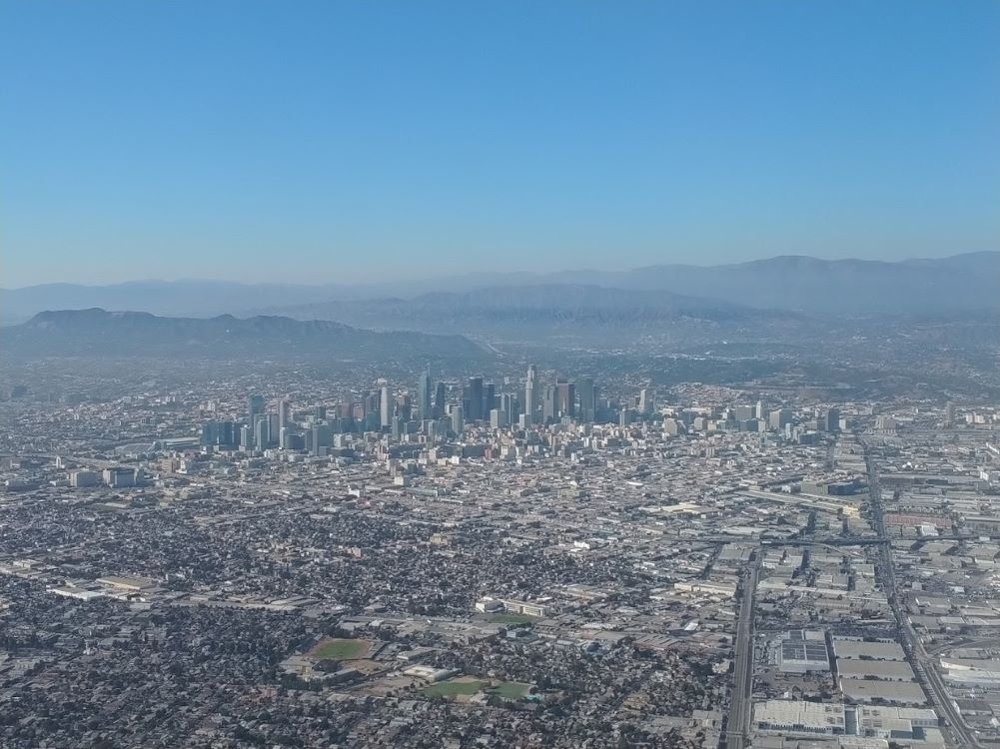
J.smith, CC BY-SA 3.0, via Wikimedia Commons ; Image Size Adjusted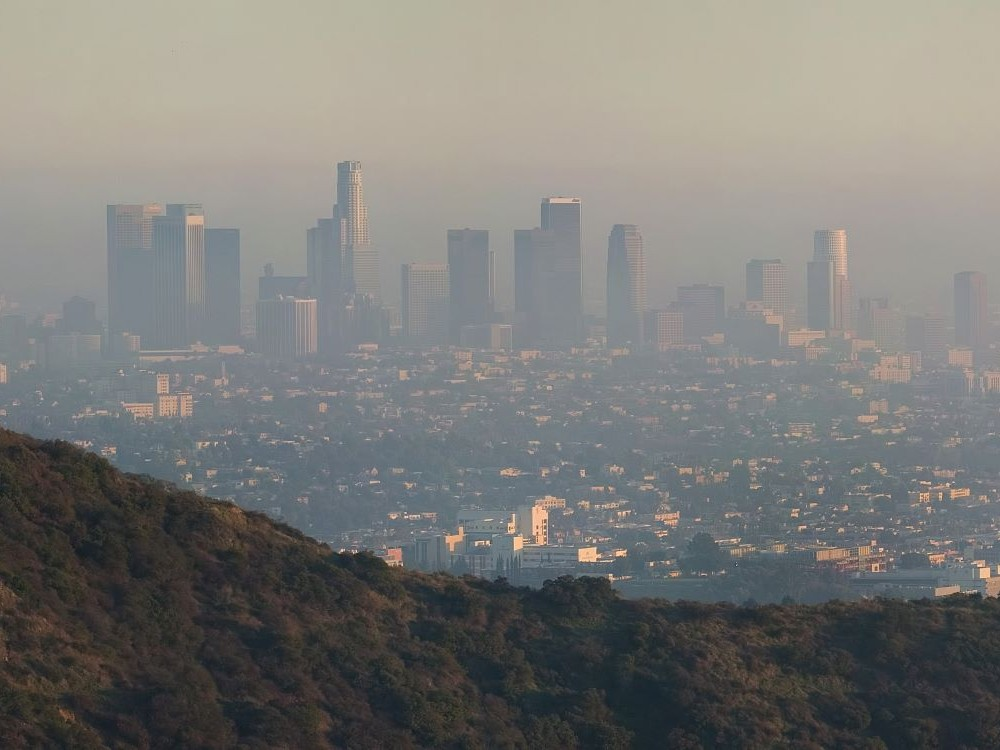
J.smith, CC BY-SA 3.0, via Wikimedia Commons ; Image Size Adjusted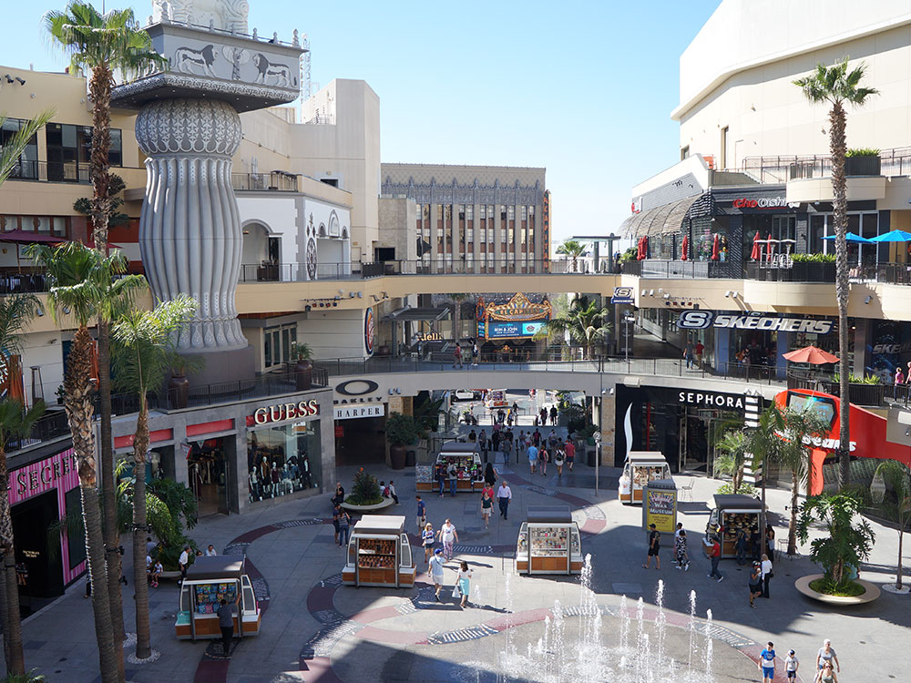
.JPG){kind=link}